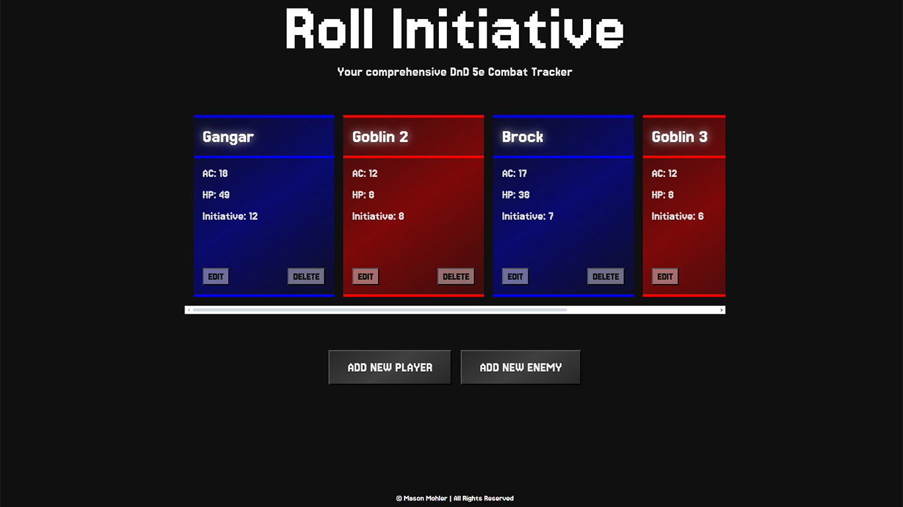

Newton County Adventure Company

I led a development team to create a website for the fictional outfitting company Newton County Adventure Company. We used HTML and CSS to build out the page and style it, and then we added JavaScript to call an API that would allow us to get current river levels and flow rates for the Buffalo River.
Mars Rover Photo Explorer

I created a website that allows the user to explore pictures taken by 3 different Mars rovers on various days. I used HTML and CSS for the main structure of the page, then I used JavaScript to call the NASA API and get photos based on the rover and date selected by the user.
NOTE: Since the creation of this website, NASA has moved the images for the Opportunity and Spirit rovers. The metadata for these rovers is still being fetched from the API, but the only rover that will currently display pictures in searches is the Curiosity. I have reached out to NASA about this and have not yet gotten a response.
Roll Initiative DnD Combat Tracker

Roll Initiative is a web application I created to track combat in Dungeons and Dragons. It allows the user to add new players and new enemies and automatically sorts them by initiative. It also lets the user edit these players and enemies on the fly, as well as stores their data in their local browser storage so that they can save their progress.